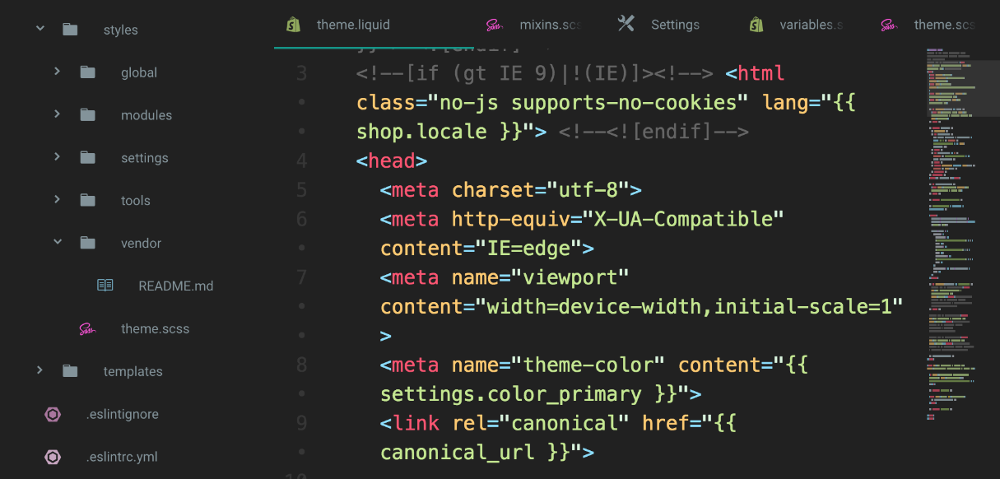
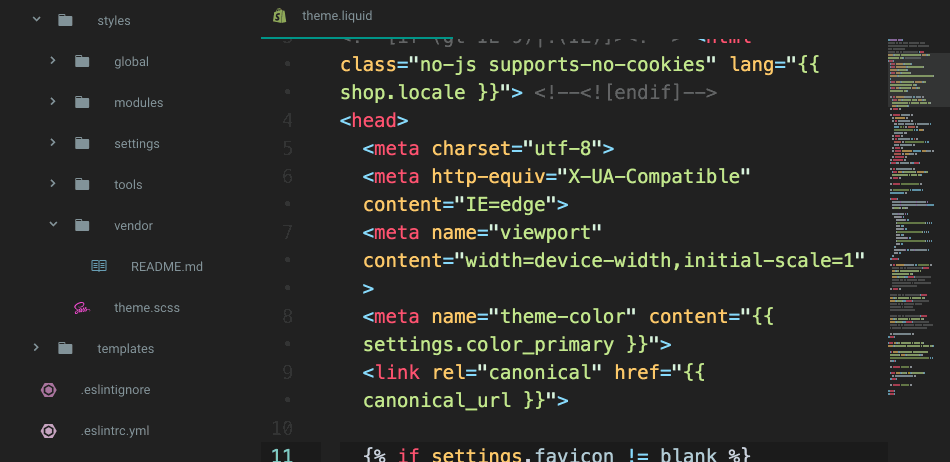

GitHub tarafından geliştirilen esnek, göze hoş gelen, eklenti desteği yüksek bir editör olan Atom için kullandığım eklentilerin bir listesini yapmak istedim. İnanıyorum ki sizlerin de işini görecektir. Bu eklentiler (özellikle Python için) editörü bir IDE gibiymiş gibi etkin kullanmanıza yardımcı olacak.
Eklentileri yüklemek için “ctrl + ,” (virgül) diyerek “Packages” sekmesine gelmeniz yeterli. Daha sonra eklentiyi arama ekranında arayarak kurabilirsiniz.
File-icons, dosyaların türlerini solda ağaç görünümünde ve sekme sıralamasında dosya isminin solunda küçük iconla gösterir. Dosya simgelerini düzenleyebilir, kendi simgenizi “packages/file-icons/styles” yolunu takip edip LESS dosyalarını düzenleyerek ekleyebilirsiniz. Varsayılan simgelere 8 renk ve 3 ton (hafif, orta, koyu) verebilirsiniz. Gayet kullanışlı ve güzel düşünülmüş bir eklenti. Hızlı işlem yapmak için birebir.
Atom-beautify, kodların dizilimini düzeltir. Dağınık kodunuzu düzgün, sıralı ve daha okunabilir hale getirirAnlaşılır bir hale sokar. HTML, CSS, JavaScript, PHP, Python, Ruby, Java, C, C++, C#, Objective-C, CoffeeScript, TypeScript, Coldfusion, SQL ve daha fazla fazlası üzerinde çalışabiliyor.
Color-picker, editör üzerinde renk paleti kullanmanızı sağlar. CSS / SASS / LESS dosya tiplerinde çalışır. HEX, HEXa, RGB, RGBa, HSL, HSLa, HSV, HSVa, VEC3 ve VEC4 renk kodlarını seçebilirsiniz. color-picker’ı kullanmak için sağ tıklayabilir veya CMD/CTRL+SHIFT+C kısayolunu kullanabilirsiniz.
Minimap, dosyanızın tamamını görmenizi ve satırlar arası hızlı geçiş yapmanızı sağlar. Sublime Text kullanmış olanlar minimap’e alışıklar. Bende Atom’a geçtikten sonra ilk aradığım şey minimap oldu. Minimap’in durumu solda veya sağda olarak ayarlanabilir. “highlight-selected” kullanılabilir.
Css-snippets, CSS, SCSS, Sass ve Less kodlarını otomatik tamamlar, özelliklere vereceğiniz değerleri listeler. Ayrıca “background:” girmek için “bg” yazıp TAB’a basmanız yeterli olacak. font-family için ff, color için c, width için w vs…
Emmet, daha hızlı HTML, CSS, XML kodları yazmanıza olanak sağlayan bir pakettir. Emmet’e alışması zor, yokluğu ise çok daha zordur. Emmet kodları hızlı bir şekilde tamamlayarak zamandan kazanmanızı ve daha az uğraş vermenizi sağlar.
Atom-css-comb, css kodlarını türlerine göre yeniden dizen, düzenleyen harika bir pakettir. Önceden hazırlanmış Yandex, Zen, ve CSSComb sıralama tercihlerini kullanabilir veya kendi sıralama tercihinizi kullanabilirsiniz. Paketi kullanmak için CTRL+ALT+C kısayolunu kullabilir veya Packages > CSS comb > Comb dosya yolunu izleyebilirsiniz.
Highlight-selected, Sublime Text veya Notepad++ gibi anahtar kelimenin veya değişkenin üzerine çift tıkladığınızda aynı kelimeleri çerceve içine alır. Aynı kelimeleri hızlı ve güvenilir bir şekilde bulmanızı sağlar. Satır satır aramanızı engeller. Minimap ile beraber başarılıdır.
remote-ftp, hostunuza FTP/FTPS/SFTP üzerinden bağlanmayı ve dosyaları düzenlemenizi sağlar. Aynı ağaç görünümde olduğu gibi ftp bağlantısınıda ağaç görünümüyle solda listeler.
Editörünüzün ayarlarını, kurduğunuz paketleri, kurduğunuz paketlerin ayarlarını GitHub üzerinde yedekleyip her seferinde bu ayarları tekrar tekrar yapma derdinden kurtulabilirsiniz. Bu paketi bonus olarak bıraktım ancak işinizi kesinlikle görecektir.
Geri dön...